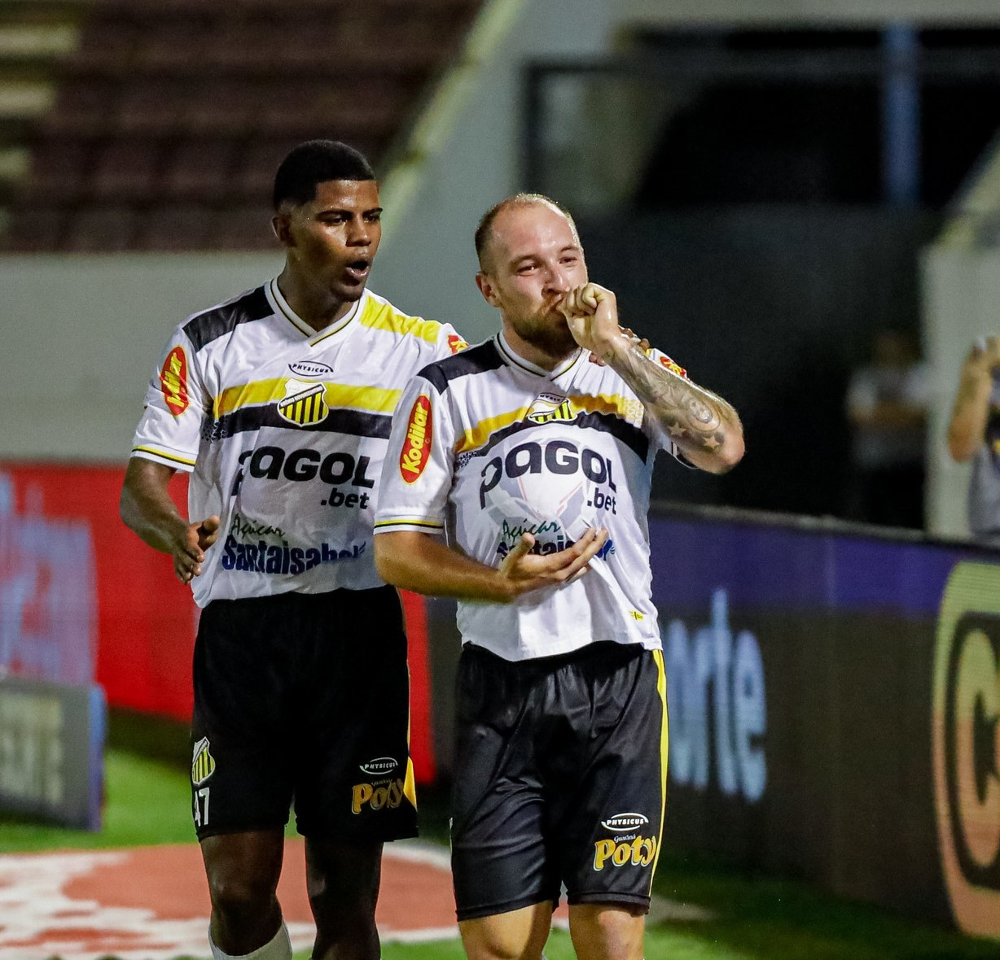

Futebol Nacional - Atlético-MG
Bolívar x Atlético-MG: onde assistir ao vivo, horário e escalações
Veja também desfalques, arbitragem e outras informações do jogo de ida das quartas de final da Copa Sul-Americana; ge acompanha a partida em Tempo Real

Futebol Nacional - Botafogo x Mirassol
Botafogo x Mirassol: onde assistir ao vivo, horário e escalações
Veja desfalques, arbitragem e outras informações do jogo atrasado da 12ª rodada do Brasileirão; Premiere transmite

Futebol Nacional - Superliga Acreana
Com 64 times, 15ª Campeonato da Superliga Acreana começa nesta quarta-feira, na Arena da Floresta
Abertura terá shows, escolha da Musa Superliga e Miss Simpatia, além da final e disputa do 3º lugar de 2024, às 18h. Times brigam pelo título no formato eliminatário. Campeão fatura R$ 15 mil

Futebol Nacional - Novorizontino
Bruno José dedica gol em vitória do Novorizontino ao primeiro filho: "Momento marcante na vida"
Atacante, que será pai de Henrique José, avalia positivamente campanha do Tigre na Série B e vê oscilações com naturalidade
TABELA 1
TABELA 2